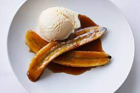

Banana's Foster

Ingredients
- 6 Tbsp Unsalted Butter
- 4 Bananas, sliced diagonally
- 1 tsp Vanilla
- 3/4 Cup Brown Sugar
- 1/4 tsp Salt
- 1/4 Cup Dark Rum
Method
- Melt butter in a large skillet, add brown sugar then stir until incorporated
- Add bananas, salt, and vanilla then cook 3-5 minutes on one side until the bananas have developed a brown crust
- Flip slices over then cook for 1-2 more minutes
- Add rum and simmer for 1-2 minutes
Serve over ice cream, french toast, etc.